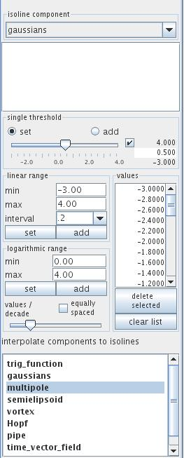
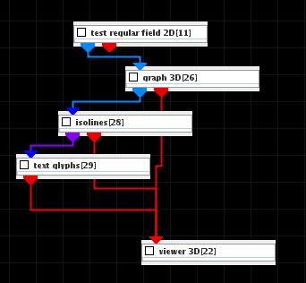

ISOLINES
The isolines module creates a series of contour lines of given constant values of a 2D field. The contour lines are colored by the level value. The selected component must be scalar.
Input data
The input is a regular or irregular 2D field.
Output data
The output field is an irregular field of isolines, a 2D geometry object and a 3D geometry object of the field.
Computation parameters

The isoline component drop down list defines the component for which isolines will be computed. For vector components the norm is used. By default the first component is choosen.
In the case of irregular data all input cell sets are listed below the isoline component drop down list. Choose appropriate cell sets from the list by ctrl/shift + left mouse click. Isolines are generated for choosen cell sets. If no cell set is choosen isolines are generated for all the data.
The single threshold slider enables the user to choose an isoline value. If checkbox on the right hand side of the slider is on, the user may adjust range and value entering the values in text fields.
A radio button menu allows values to be set and add. If set is on the slider determines a value for one isoline. If add is on, every further slider value defines an additional isoline associated with the value. By default the set modus is on.
In the linear range field the user can choose a set of evenly spaced isoline values between the min and max value and a user defined interval. Press the set button in order to generate a new set of values, press the add button in order to add new values.
Similarily, in the logarithmic range field the user chooses isoline values which are logarithmically spaced with values between min and max value.
The values/decade slider determines the number of isolines.
If the equally spaced check box is on isolines in each decade are equallly spaced.
In the values field all generated isoline values are listed in a text field. Below the field the delete selected button allows to delete selected values from the list. Select the value by mouse clicking at the value, in order to choose more than one value mouse click with ctrl/shift. The clear list button deletes all but one value from the list.
Components in the interpolate components to isolines text field list are interpolated onto isolines and sent to output. To choose a component click left mouse button, for more than one component use ctrl/shift.
Presentation parameters
Presentation tab contents are described in the common interfaces section unter the Presentation Panel entry.
There are two parameters which are especially important for lines.
The line width slider allows to adjust the width of the isolines.
A drop down menu allows to choose between different line styles solid, dashed, dotted, dashdot. The default line style is solid.
Example

Choose test regular field 2D module from test objects library, graph 3D and isolines modules from 2D field mappers library and text glyphs from general mappers and accessories library and connect the modules.
In graph 3D module UI choose gaussians1 as graph and color component, choose an appropriate graph scale. In isolines module UI choose interval 1. In its GUI choose bicolor colormap and set the minimum value to white color. In text glyph module choose 2d fonts and an appropriate font size.